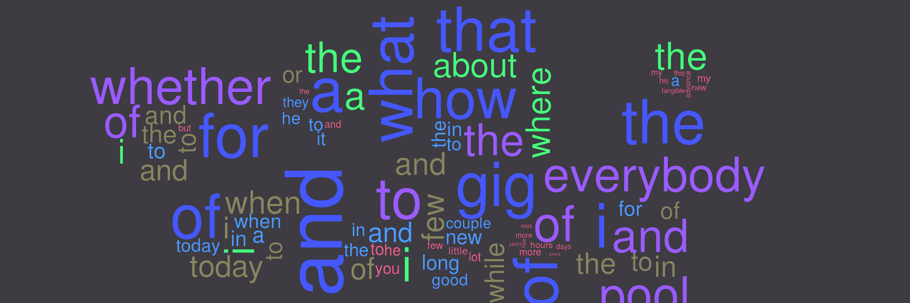
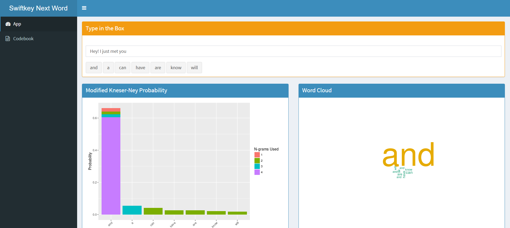

Sample project
Quad-gram Backoff Next Word Prediction Model with Modified Kneser-Ney Smoothing 
The app uses a quad-gram back-off model with modified Kneser-Ney smoothing to predict the next word of a sentence.
The alorithm learns from 1% of the Coursera SwiftKey data.
It requires only 5 ms per query to run on average with a total of 41.3 MB of database.
Benchmark using Jan-san's implementation results in 14.31% overall top-3 score as compared to the baseline of 6.64%.
The app is hosted here.
The GitHub repository is here.
Simply enter a word into the text box; predictions, modified Kneser-Ney probabilities and word clouds will appear.
Creates a probability for a given n-gram based on its context interpolated with lower-level n-grams. It is considered by many to be the most effective
smoothing algorithm in n-gram models.
Example: The word 'DeNiro' will have a rather high word frequency on its own. However, almost the only context it appears in is with 'Robert'; thus,
we can assume that it is actually much 'less frequent'.
Chen and Goodman (1998) devised modified Kneser-Ney smoothing to take this into account.
An improvement from Kneser-Ney smoothing, modified Kneser-Ney smoothing use different discount weights according to frequencies of frequencies of words
to achieve more accurate results.
The backoff model is a Markov-chain based model where the highest-order n-grams (in our case quad-grams) are used first to determine the next word. If there is no match, the lower-order n-grams are used ending with uni-grams, effectively selecting the single word with the highest probability in the corpus.
|
user/system/elapsed |
|
pred/pkn/ngram |
Below is the benchmarking results using Jan-san's implementation. The numbers in parantheses are those of baseline predictions.
|
Overall top-3 score: 14.31 % (6.64 %) |